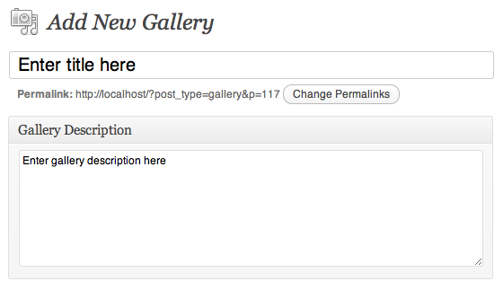
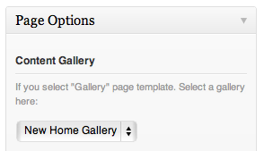
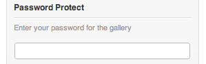
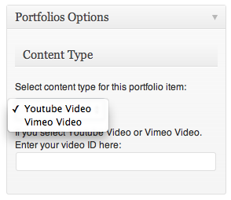
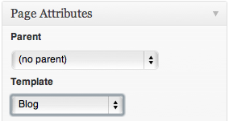
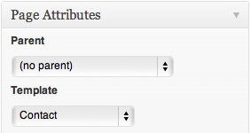
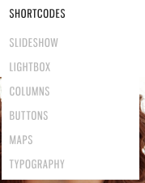
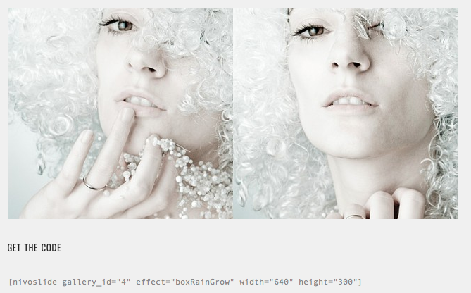

“Core Wordpress Version” Documentation by “Peerapong Pulpipatnan”
“Core Wordpress Version”
Created: 09/03/2012
By: Peerapong Pulpipatnan
Thank you for purchasing my theme. If you have any questions that are beyond the scope of this help file, please feel free to email via my user page contact form here. Thanks so much!
Table of Contents
A) Getting Started - top
In order to begin installing Core theme. You need the latest version of Wordpress. Here is the download URL. Once you downloaded and set it up, You are ready to go.
B) Installation - top
Upon downloading the package, you will have an core.zip inside the theme package. Upload this using your Wordpress admin and click on the Appearance > Themes tab..
Notice: if you are new to WordPress and have problems installing it you might want to check out this link: Solving broken theme issues. After that is done activate the theme as you would activate any other theme at Appearance > Themes. Core is now the active theme and you will be sent to the Themes Option Panel immediately.
If you are new to WordPress and have problems with setting up the theme you might want to import the dummy content file (core_sample_content.xml) that comes with the theme. You can import this file by clicking Tools > Import > Wordpress. The theme will then import some dummy posts and pages from the live preview. However you will still need to set some options on your own ex. main menu and theme settings.
B 1) Setup Main Menu - top
Open Appearance > Menus then click "Create Menu" name it "Main Menu". Add items to your menu items and select menu location.
For those who are not familiar with Wordpress 3.0 menu below are some tutorials.
- http://templatic.com/news/wordpress-3-0-menu-management
- http://www.wonderhowto.com/how-to-use-new-menu-system-wordpress-3-0-thelonious-376792/
B 2) Setting up theme settings - top
If you want to change options of the Theme open the “Core” (located in your admin sidebar) and click it, you will notice several tabs with options. You can also change theme layout from stretched to boxed in this Core admin.
B 3) Setting up image gallery - top

First you have to create a gallery. From your admin sidebar, open Galleries > Add New. You will get add new gallery form. Enter gallery title and description then click "Publish".
Now you have 1 empty gallery. Next you have to add images to this gallery. From gallery admin page. Click on "Add New" next to "Gallery Images" text.
Then select images you want to upload to this gallery. Once you finish upload each image. It will automatically attach to this gallery. You can also change image title and description from this page. If you want to change order of images within gallery. You can easily drag&drop image next to each one. Once you finish dragging, click "Update" to save changes.

OK now you have a image gallery. Next step is to add gallery page. Core has 7 predefined gallery templates. From your admin sidebar, open Pages > Add New. You will get add new page form. Enter page title and description.
Then you have to select "Content Gallery". This is the main images contents display on page and every gallery templates have to had this option selected.
Next look at Page Attributes" box. Core has 6 predefined gallery templates and you can select one for this page :)

B 3) Setting up password protected gallery - top

From your admin sidebar, open Pages > Add New. You will get add new page form. Enter page title and description.
Then you have to select "Content Gallery". This is the main images contents display on page and every gallery templates have to had this option selected.
Add "Password Protect" for this individual gallery page. Just enter your gallery password and when visitor view your page, they will need to enter password, you have entered here. This is option is best for displaying image gallery for certain customers :)
Next look at Page Attributes" box. Core has 6 predefined gallery templates and you can select one for this page :)
B 4) Setting up video portfolio - top

First you have to create a portfolio item. From your admin sidebar, open Portfolios > Add New Portfolio. You will get add new portfolio form. Enter portfolio title and description.
Next look at "Portfolios Options" box. Select content type from ""Youtube Video", "Vimeo Video". once you select video type, you have to enter video ID ex. "cdygEzfbhqc" for Youtube and "27299211" for Vimeo.
Next you have to upload image for this portfolio item. Look at "Featured Image" box. and upload your image.
OK now you have a portfolio item. Next step is to add portfolio page. From your admin sidebar, open Pages > Add New. You will get add new page form. Enter page title and description.
Next look at Page Attributes" box. Select "Video Portfolio" for page template and click on "Publish" :)
B 5) Setting up homepage gallery - top
If you have already setup image gallery. From your admin sidebar, open Core admin > Homepage > Choose Homepage Gallery and select the gallery.
You can also change homepage styles (See demo site for all possible styles). From your admin sidebar, open open Core admin > Homepage > Homepage slideshow style and select the style
Next you can enable music playing on homepage. From your admin sidebar, open open Core admin > Music. Note: You have to upload all music formats (mp3, m4a, ogg) to support all browsers.
B 6) Setting up blog - top

First, you have to create some blog post which is basic stuff. You can find many tutorials from Google :) (or just play around with posts on your admin dashboard). Next step, I will guide you how to create a blog page to display these posts.
From your admin sidebar, open Pages > Add New. You will get add new page form. Enter page title and description.
Next look at Page Attributes" box. Select "Blog" for page template and click on "Publish" :)
B 7) Setting up contact - top

First, you have to setup your email address. Open Core Admin Panel > General and setup your email address.
From your admin sidebar, open Pages > Add New. You will get add new page form. Enter page title and description.
Next look at Page Attributes" box. Select "Contact" for page template and click on "Publish" :)
You can also add widgets to "Contact Sidebar" on Appearance > widgets.
B 8) Setting up social media profiles - top
You can setup social media profiles which display on top right corner of page. From your admin sidebar, open Core Admin Panel > Social-Profiles. Add your social profiles to enable them.
B 9) Setting up widgets - top
However the homepage sidebar is support all Wordpress 3.0 widgets. I created 8 custom widgets to make your website more interesting.
You can also add your sidebar via Admin panel.
To add content to sidebar simple go to Appearance > Widgets and drag item into certain sidebar.
B 10) Theme Translation - top
You need an application name "PoEdit" and you can download it for FREE here http://www.poedit.net/.
Once you download and install it. Open file /languages/en_US.po with PoEdit then translate it to yours. You will need to upload all files in /languages folder to your server once you finished translate.
B 11) Available Shortcodes - top

Core has many built-in custom shortcodes. You can see full lists of them and get sample code from Core demo site. From demo menu bar, select one of short codes pages.

B 12) Using Twitter Widget - top
Please visit http://support.themegoods.com/?knowledgebase=fix-twitter-widget and follow the instruction there.
C) CSS Files and Structure - top
I'm using five CSS files in this theme. The first file contains all of the specific stylings for the page. The file is separated into sections using:
/* CSS Reset */ some code /* Global layout */ some code /* Input layout */ some code
The second file is a styling for jQuery UI element.
The third file is a styling for modal window.
The fourth and fifth file is a styling for HTML5 video.
If you would like to edit a specific section of the site, simply find the appropriate label in the CSS file, and then scroll down until you find the appropriate style that needs to be edited.
D) JavaScript - top
This theme imports eight Javascript files.
- jQuery
- jQuery UI
- jQuery Validate
- jQuery fancybox
- jQuery nivoslider
- jQuery easing
- Browser check
- Custom script
- jQuery and jQuery UI are a Javascript library that greatly reduces the amount of code that you must write.
- jQuery validate contact form
- jQuery Fancybox create a nice popup window using in gallery
- jQuery nivoslider for homepage slider
- jQuery easing for slider transition effect
- Browser check check browser name and version
- Most of the animation in this theme is carried out from the customs scripts.
E) Sources and Credits - top
I've used the following script, images, icons or other files as listed.
- jQuery UI http://jqueryui.com/
- jQuery validate http://bassistance.de/jquery-plugins/jquery-plugin-validation/
- jQuery Fancybox http://fancybox.net/
- jQuery nivoslider http://nivo.dev7studios.com/
- jQuery validate http://bassistance.de/jquery-plugins/jquery-plugin-validation/
- Fonts for commercial use http://www.fontsquirrel.com/
Once again, thank you so much for purchasing this theme. As I said at the beginning, I'd be glad to help you if you have any questions relating to this theme. No guarantees, but I'll do my best to assist. If you have a more general question relating to the themes on ThemeForest, you might consider visiting the forums and asking your question in the "Item Discussion" section.
Peerapong Pulpipatnan